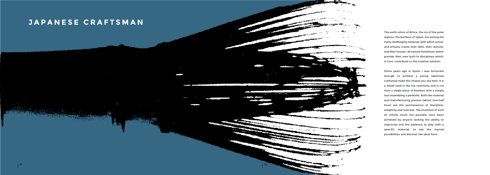
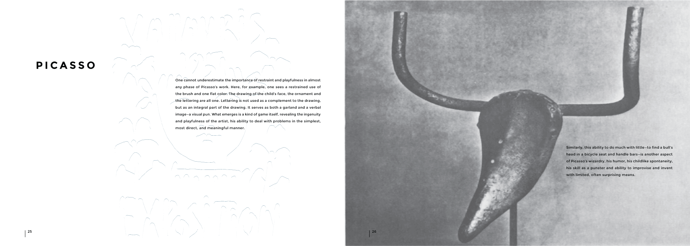

<!DOCTYPE html>
<html></html>
    <head>
        <meta charset="utf-8">
        <meta http-equiv="X-UA-Compatible" content="IE=edge">
        <meta name="viewport" content="width=device-width"/>
        <title>Peter An-Designer</title>
        <link rel="stylesheet" href="paul.css">
        <link rel="stylesheet" href="../owl-carousel/owl.carousel.css">
        <link rel="stylesheet" href="../owl-carousel/owl.theme.css">
    </head>

    <body>
            <header class="head">
           <a href="../index.html"><h5>The Design and Directory of Peter An</h5></a>
            <h5 class="end"><a href="archive.html">Archive</a></h5>
        </header>

        <div class="container">
        <div id="owl-demo" class="owl-carousel owl-theme">
            <div class="item"><iframe width="300" height="350" src="https://e.issuu.com/embed.html#14784110/14027794" frameborder="0" allowfullscreen></iframe>
            </div>
            <div class="item">
            </div>
            <div class="item">
            </div>

</div>

            <div class="text">
        <div class="descript">
            <p>Paul Rand's playful influence on design is invaluable and his principles guided me in redesigning his seminal book "Design and the Play Instinct". Composed entirely of a simple 3 column grid, "Design and the Play Instinct" challenged me with creating a consistent design through the entirety of the publication. The cover makes a great case for the Play Instinct by bounding the text “Design and the Play Instinct” within the larger “Paul Rand”. Here the text is ready to break through by utilizing the "Play Instinct", shown by the text “Play” in spot color.
Throughout the book I try to match the sensibility between theme, image, and content.</p>
        </div>
        <div class="info">
        <p><span>Project Name : Paul Rand Design & the Play Instinct</span></p>
             <p><span>Type : Visual, Graphic, Layout, Book Binding</span></p>
             <p><span>Tools Used : Illustrator, Photoshop, Physical Book Binding </span></p>
            </div>
        </div>
    </div>

    <footer>
         <h5 class="footer-links"><a href="https://medium.com/@peetparkaa" class="foot-1">scripts</a></h5>
       </footer>

    <script src="https://ajax.googleapis.com/ajax/libs/jquery/1.12.0/jquery.min.js">
</script>
<script src="../owl-carousel/owl.carousel.js"></script>

<script>
    $(document).ready(function() {
  $("#owl-demo").owlCarousel({

      navigation : true, // Show next and prev buttons
      slideSpeed : 300,
      paginationSpeed : 400,
      singleItem:true
  });
});
    </script>
    </body>
</html>
